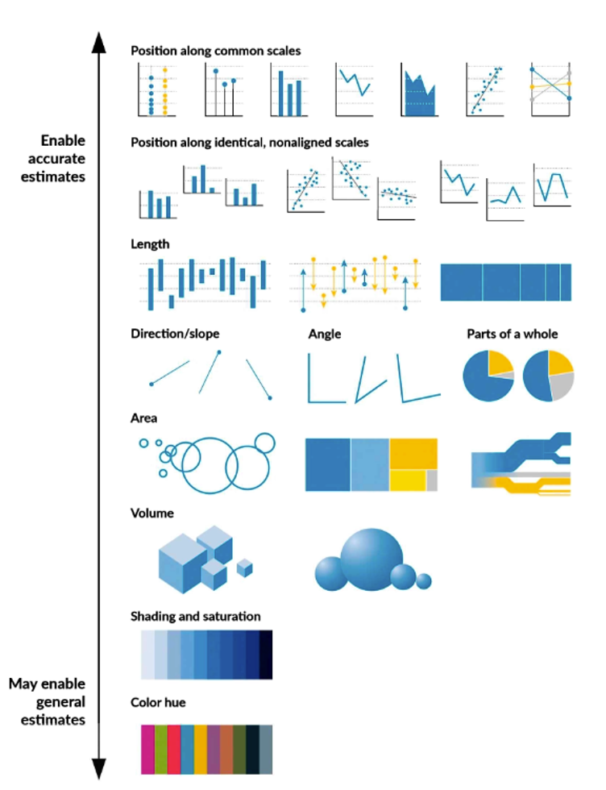

技术修辞¶
人类的感知¶
在感知科学与心理物理学（psychophysics）中，人类获取环境信息主要依赖一组“可度量的维度”，这些维度构成我们与世界交互的基础：
信息类型 |
感知方式 |
举例 |
功能 |
|---|---|---|---|
空间（Space） |
视觉、触觉 |
位置、方向、距离、大小、形状 |
判断远近、避险、操作 |
时间（Time） |
听觉、视觉 |
持续时间、顺序、节奏、速度 |
理解事件因果、计划行动 |
数量（Quantity） |
视觉、逻辑 |
多寡、多少、比例 |
判断资源、决策分配 |
强度（Intensity） |
多感官 |
声音大/小、光亮/暗、力量强/弱 |
反应威胁或机会 |
温度（Temperature） |
触觉 |
冷热 |
生理调节与生存 |
质地（Texture） |
触觉、视觉 |
光滑、粗糙、湿、干 |
判断食物、工具特性 |
颜色与光（Color & Light） |
视觉 |
明暗、对比、饱和度 |
识别环境、区分对象 |
运动（Motion） |
视觉、前庭觉 |
快慢、方向 |
追踪目标、平衡控制 |
声音特征（Sound features） |
听觉 |
音高、音色、响度 |
识别生物、语言交流 |
社会信号（Social cues） |
视觉、听觉 |
表情、语气、姿态 |
理解他人意图与情绪 |
人类经过漫长的进化，这些已经成为了人类的本能。
修辞¶
修辞并不是“语言的美化”，而是人类将身体经验转化为抽象意义的感知认知机制。
人类的思维起点不是逻辑，而是身体经验（embodied experience）。
我们通过身体与世界互动——移动、抓取、感知冷热、感受力量——
这些“具身经验”构成了认知的坐标系。
于是，所有抽象概念（如时间、情感、价值、社会关系）
都被“投射”到身体经验的空间维度上。
抽象概念的身体隐喻¶
抽象概念 |
源自身体经验的隐喻 |
对应感知维度 |
|---|---|---|
时间 |
“向前看未来”“把过去抛在身后” |
空间方向（前后） |
情感 |
“情绪高涨”“情绪低落” |
垂直空间（上/下） |
价值 |
“高尚的人格”“低劣的行为” |
高度、重量 |
数量 |
“价格上涨”“通货膨胀下降” |
垂直位置 |
权力 |
“地位高”“被压制” |
力与空间 |
理性 |
“冷静分析”“激情蒙蔽理智” |
温度感受 |
关系 |
“两人很近”“我们渐行渐远” |
空间距离 |
社会结构 |
“社会阶梯”“底层人民” |
垂直等级结构 |
这些表达看似语言习惯，
但其实体现了人类大脑用感知经验映射抽象领域的方式。
这种映射是普遍的、深层的、无意识的。
中国古代的丈量单位¶
单位 |
意义 |
用法 |
|---|---|---|
寸 |
食指的第一节的长度，一寸 |
三寸不烂之舌 |
尺 |
手腕到肘，一尺 |
尺度不一 |
咫 |
一掌+一尺 |
近在咫尺 |
丈 |
一个成年男子的身高 |
丈夫，丈人 |
寻 |
张开双臂，两手之间的距离 |
尺有所短，寸有所长（每个人的关节长度不一样）
丈二和尚摸不着头脑（佛像通常高一丈二尺，防止有人抬手模佛像）
英国古代的单位¶
单位 |
来源 |
|---|---|
foot（英尺） |
脚长 |
span（拃） |
大拇指到小指展开距离 |
fathom（英寻） |
双臂展开 |
hand（英制测马高） |
四英寸，基于掌宽 |

生活中的隐喻¶
他是李总的左膀右臂
你是我的心肝宝贝
父母官
子民
信息高速公路
学术嗅觉
牵着科技的牛鼻子
隐喻的类型¶
位隐喻¶
高兴为上，悲伤为下
今天她的情绪高涨
我的心情到了低谷。
feeling up
boosted my spirits
feeling down
I am depressed.
有意识为上，无意识为下
get up
wake up
fell asleep
sank into coma.
身体隐喻¶
你是我的左膀右臂
你是我的小心肝
社会关系隐喻¶
父节点
子节点
根节点
二叉树
真实世界隐喻¶
信息高速公路
互联网
技术隐喻¶
案例1：用沙子的多，隐喻IP V6的地址多
IP V6可以让地球上的每个沙子获得一个IP 地址。
案例2：用水电来隐喻方便
我们语联网的愿景就是 ：让人类像使用水和电一样方便地使用语言服务
案例3：隐喻重要
自然语言处理是人工智能皇冠上的明珠。
尝试解释这些新概念
云计算
物联网
区块链
低代码
修辞的本质¶
人类的修辞，本质上是用语言去影响、表达与建构意义的艺术。它并不仅仅是“说得好听”，而是一种让思想产生力量、让信息具有感染力的方式。
“修辞的根源，是人类生存感知的结构。”
修辞不是语言附加的“外衣”，而是思维的骨架。
我们表达的方式取决于我们如何感知世界。
修辞手段源自身体经验的投射。
比喻、拟人、夸张、对比等修辞策略，本质上都是感知结构的再现。
修辞体现了认知的具身性。
人类通过感官与身体的互动来理解世界——修辞语言正是这种“身体知识”的延伸形式。
从信息到感知¶
数据只是数字或符号，例如 27、0.58、2025 等，人类感官无法直接理解这些符号所代表的数量、关系或变化
数据可视化可将抽象信息转为具体的感知。人类的视觉系统能快速感知位置、长度、颜色、方向、大小等特征。于是我们把数据“映射”到这些视觉特征上，让人快速看出差异、模式和关系。
这种“映射规则”就像语言的语法——它决定了意义如何被编码和解码。
数据往往高维、抽象、不可直观。
而人类的感知系统只能处理有限的维度（通常 2–3 个视觉变量 + 若干色彩/形状辅助）。
因此可视化的任务，是把高维数据映射（mapping）到有限的感知维度上。
例如：
PCA（主成分分析） → 将高维特征投影到二维坐标平面；
热力图（Heatmap） → 用色彩明度代表数值强弱；
平行坐标图（Parallel Coordinates） → 用空间线条显示多维相关性。
感知的语法¶
法国学者 Jacques Bertin（1967） 在《图形符号学》（Semiology of Graphics）中首次提出：
视觉有若干“变量”（visual variables），每一种变量对应一种人类感知维度。
7种视觉变量：
位置 (Position)
大小 (Size)
明度 (Value)
纹理 (Texture)
颜色 (Color)
方向 (Orientation)
形状 (Shape)
这些变量可以类比为语言中的“词汇”，而它们的使用规则构成了“语法”。
视觉变量 |
感知维度 |
可表达的信息类型 |
感知精度（高→低） |
示例 |
|---|---|---|---|---|
位置 (x, y) |
空间、顺序 |
精确比较、关联关系 |
★★★★★ |
散点图、折线图 |
长度 (length) |
数量、比例 |
数值比较 |
★★★★☆ |
柱状图 |
角度 / 方向 (angle, orientation) |
方向、趋势 |
流动、方向性关系 |
★★★☆☆ |
饼图、箭头图 |
面积 (area) |
数量、等级 |
大致大小关系 |
★★☆☆☆ |
气泡图、树图 |
颜色亮度 / 饱和度 (color luminance / saturation) |
强弱、密度 |
热度、强度 |
★★☆☆☆ |
热力图 |
形状 (shape) |
分类、身份 |
区分类别 |
★★☆☆☆ |
符号图 |
纹理 / 密度 (texture / density) |
密集度 |
模式识别 |
★☆☆☆☆ |
背景图、点密度图 |
**William Cleveland & Robert McGill (1984)**在论文：《Graphical Perception: Theory, Experimentation, and Application to the Development of Graphical Methods》（Journal of the American Statistical Association）中对人类感知精度做了排序：
感知精度排序：¶
位置（position）
长度（length）
角度 / 方向（angle / slope）
面积（area）
体积（volume）
颜色亮度 / 饱和度（color / saturation）
这一排序成为后来所有数据可视化教材与设计标准的基础。例如：
为什么折线图优于饼图？为什么条形图比气泡图更清晰？答案都来自这个实验体系。

认知适配理论¶
代表人物：Iris Vessey (1991)
论文：《Cognitive Fit: A Theory-Based Analysis of the Graphs versus Tables Literature》
核心观点：¶
信息呈现形式应与任务类型相匹配。
可视化的价值取决于它是否适配用户的认知加工路径（cognitive processing path）。
空间任务（如趋势识别） → 适合图形化表示；符号任务（如精确查找） → 适合表格化表示。
可视化修辞¶
感知结构 |
语言修辞 |
可视化修辞 |
|---|---|---|
空间方向 |
“上升”“下降” |
折线图趋势、箭头方向 |
强度感 |
“强”“弱” |
颜色深浅、饱和度 |
大小感 |
“巨大影响” |
圆面积、矩形尺寸 |
距离感 |
“拉近关系” |
节点间距、群组布局 |
温度感 |
“冷淡”“热烈” |
热力图冷暖色系 |
光暗感 |
“前途光明” |
明暗对比 |
例如：
色彩选择 → 暗示“风险”或“机遇”；
坐标比例 → 放大或压缩变化趋势；
动画与交互 → 引导用户注意“故事主线”。
这种“降维映射”不是技术性操作，而是认知适配（cognitive fit）——
即如何在人的注意力、工作记忆与模式识别能力的限制内，让数据仍然“说得清楚”。
颜色的修辞：情绪与价值导向¶
可视化设计 |
暗示与感受 |
适用场景 |
|---|---|---|
红色上升线 |
强烈、危险、紧迫、增长、警示 |
股票走势、风险预警、疫情曲线 |
绿色上升线 |
安全、增长、健康、积极 |
收益率、环保指标 |
蓝色渐变热力图 |
稳定、冷静、理性 |
科研数据、技术文档 |
橙色或黄色区域 |
活跃、创新、警觉 |
行为分析、舆情趋势 |
灰色线条或背景 |
稳定、客观、中性 |
辅助信息、历史基线 |
线条与形状的修辞：节奏与力量感¶
设计形式 |
感知暗示 |
示例 |
|---|---|---|
粗线条 |
强烈、有力、主导性高 |
主趋势线 |
细线条 |
柔和、辅助、细节化 |
对比组、预测线 |
虚线 |
不确定、未来、假设 |
预测区间 |
曲线 |
自然、连续、平滑 |
气候变化、人口趋势 |
折线 |
波动、动态、离散 |
股价、网络流量 |
例如，在同一图中：
粗实线代表“现实主趋势”，
虚线代表“模型预测”，
细线代表“子样本”，
这种视觉语法让观众自动解读主次关系。
构图与空间的修辞：稳定与对比¶
暗示意义 |
示例 |
|
|---|---|---|
左到右上升 |
进步、发展 |
经济增长 |
右到左下降 |
衰退、回落 |
能源消耗 |
对称布局 |
平衡、比较、等势 |
两组对比 |
中心辐射 |
权力、影响、扩散 |
网络关系、生态系统 |
层级向下 |
从属、结构、系统性 |
组织架构图 |
动态与交互的修辞：时间感与参与感¶
动效形式 |
感知作用 |
示例 |
|---|---|---|
动画渐变 |
展现演变过程 |
气候变化、疫情传播 |
闪烁或脉动 |
吸引注意 |
关键事件点 |
时间轴滑动 |
体现时序结构 |
历史数据演变 |
交互悬停（hover） |
鼓励探索 |
信息可视分析仪表盘 |
比例与尺度的修辞：放大或弱化差异¶
操作 |
效果 |
示例 |
|---|---|---|
压缩纵轴 |
强化差异、制造戏剧性 |
政治或商业演讲图 |
放大纵轴 |
弱化波动、显得平稳 |
政府报告、企业财报 |
断轴（axis break） |
突出异常值 |
异常检测、事故报告 |
对数坐标 |
平衡极端数据 |
科学数据、金融涨幅 |
总结¶
层次 |
内容 |
核心概念 |
|---|---|---|
身体层 |
感知经验（方向、空间、温度、力量） |
Embodiment |
认知层 |
概念隐喻结构（上=好，近=亲） |
Conceptual Metaphor |
语言层 |
修辞与表达（上升、冷淡） |
Linguistic Realization |
视觉层 |
图形、颜色、空间布局 |
Visual Metaphor |
社会层 |
文化与思维模式（权力=上位） |
Cultural Model |